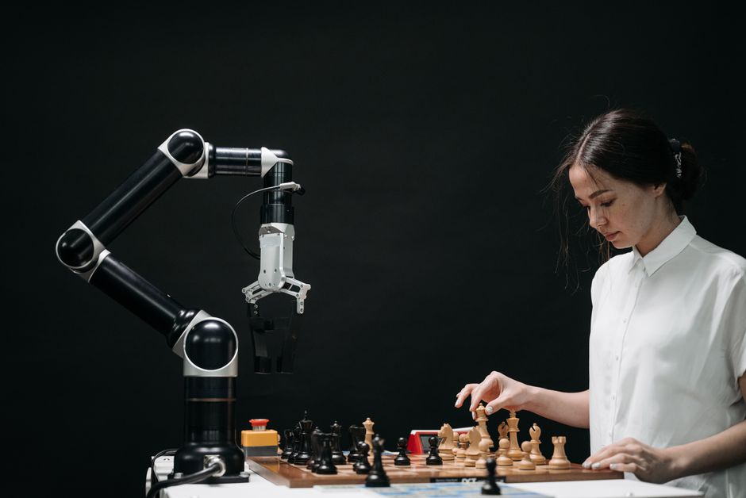

Imagine a robot that can pick out a specific toy from a pile, navigate a bustling classroom without bumping into anyone, or even sort different coloured blocks with precision. How do these incredible machines achieve such feats? They "see" the world around them, much like we do, but through the digital magic of Computer Vision! At MakerWorks, we believe in empowering the next generation of innovators, and understanding how robots perceive their environment is a crucial step in building the future.
What is Computer Vision?
At its core, Computer Vision is a field of Artificial Intelligence (AI) that enables computers and robots to interpret and understand visual information from images and videos. Think of it as giving a robot not just eyes (a camera), but also a brain that can process what those eyes see. Just as our brains process light signals from our eyes to recognize faces, objects, and scenes, computer vision algorithms allow robots to make sense of the digital images they capture.
From simple tasks like detecting the edges of an object to complex ones like understanding human emotions from facial expressions, computer vision is the technology that bridges the gap between the digital world of pixels and the physical world of objects and actions.
Why is Computer Vision Important for Robotics?
Without computer vision, most robots would be blind, limited to performing pre-programmed movements in highly controlled environments. It's the key to making robots truly intelligent, autonomous, and adaptable. Here’s why it’s so vital:
- Autonomy: Robots can navigate and perform tasks without constant human intervention.
- Interaction: They can interact safely and effectively with humans and other robots.
- Adaptability: Robots can adjust to changing environments and unexpected situations.
- Precision: They can perform delicate tasks with high accuracy, like assembling small components.
- Safety: By "seeing" obstacles or people, robots can avoid collisions and work safely alongside humans.
"Computer Vision is not just about making robots see; it's about making them understand. It transforms a machine from a mere tool into an intelligent companion capable of perceiving and interacting with our complex world."
How Do Robots "See"? The Basics of Computer Vision
The process of a robot "seeing" and understanding its environment can be broken down into several steps, much like how our own vision works:
1. Image Acquisition
This is where the robot's "eyes" come into play. Cameras (like webcams, depth cameras, or specialized industrial cameras) capture light from the environment and convert it into digital images or video streams. These are essentially grids of pixels, each with color and brightness information.
2. Image Processing
Once an image is acquired, it often needs to be cleaned up and enhanced. This step involves techniques like:
- Noise Reduction: Removing unwanted disturbances from the image.
- Filtering: Applying various filters to highlight certain features or smooth out details.
- Color Conversion: Changing an image from color (like RGB) to grayscale, which simplifies processing for many tasks.
- Resizing: Adjusting the image dimensions for faster processing or specific analysis needs.
3. Feature Extraction
After processing, the robot needs to find interesting or important parts of the image. These "features" could be:
- Edges: The boundaries between different objects or regions.
- Corners: Points where two edges meet.
- Shapes: Basic geometric forms like circles, squares, or rectangles.
- Colors: Identifying specific hues or color ranges.
- Textures: Patterns and details on surfaces.
4. Understanding and Interpretation
This is the "brain" part. Using the extracted features, advanced algorithms (often powered by Machine Learning and Deep Learning) try to make sense of what's in the image. This involves:
- Object Detection: Identifying specific objects and drawing bounding boxes around them (e.g., "There's a ball here!").
- Object Recognition: Classifying what the detected object is (e.g., "That's a cricket ball," or "That's a water bottle").
- Image Segmentation: Dividing an image into multiple segments or regions, making it easier to analyze specific parts.
- Scene Understanding: Comprehending the overall context of an image (e.g., "This is a classroom," or "This is a busy street intersection").
Key Applications of Computer Vision in Robotics
The applications are vast and constantly expanding:
- Object Detection & Recognition: Crucial for robots that need to pick, place, sort, or manipulate specific items, like in manufacturing assembly lines or warehouse automation.
- Navigation & Mapping: Autonomous robots use computer vision to build maps of their environment (SLAM - Simultaneous Localization and Mapping), detect obstacles, and plan safe paths. Think of self-driving cars or delivery robots.
- Quality Control & Inspection: In industries, robots with vision systems can quickly inspect products for defects, ensuring high quality without human error.
- Human-Robot Interaction (HRI): Robots can recognize human faces, gestures, and even emotions, allowing for more natural and intuitive interaction. This is vital for collaborative robots (cobots).
- Augmented Reality (AR) & Virtual Reality (VR): Computer vision helps track movements and overlay digital information onto the real world.
Getting Started with Computer Vision for Your Robot
The good news is that getting started with computer vision isn't as daunting as it might seem, especially with the right tools!
The most popular and powerful open-source library for computer vision is OpenCV (Open Source Computer Vision Library). It provides thousands of optimized algorithms for image processing and computer vision tasks. Coupled with Python, which is easy to learn and widely used, you have a potent combination.
What you'll need:
- A computer (laptop or desktop).
- A simple webcam or a Raspberry Pi camera module.
- Python installed on your system.
- OpenCV installed (
pip install opencv-python).
A Simple Code Example: Seeing in Grayscale
Let's write a small Python program using OpenCV to load an image, convert it to grayscale, and display both the original and grayscale versions. This demonstrates basic image acquisition and processing.
import cv2 # Import the OpenCV library
# Define the path to your image file
# IMPORTANT: Replace "path/to/your/image.jpg" with the actual path to an image on your computer!
# For example: "my_robot_photo.jpg" if the image is in the same folder as your script.
image_path = "path/to/your/image.jpg"
# Read the image from the specified path
# cv2.imread() loads an image. It returns None if the image cannot be found or loaded.
img = cv2.imread(image_path)
# Check if the image was loaded successfully
if img is None:
print(f"Error: Could not load image from {image_path}")
print("Please make sure the image path is correct and the image file exists.")
else:
print("Image loaded successfully!")
# Convert the original color image to grayscale
# cv2.cvtColor() changes the color space of an image.
# cv2.COLOR_BGR2GRAY converts from BGR (Blue-Green-Red, OpenCV's default) to Grayscale.
gray_img = cv2.cvtColor(img, cv2.COLOR_BGR2GRAY)
# Display the original image in a window named "Original Image"
cv2.imshow("Original Image", img)
# Display the grayscale image in a window named "Grayscale Image"
cv2.imshow("Grayscale Image", gray_img)
# Wait indefinitely until a key is pressed.
# This keeps the image windows open until you press any key.
cv2.waitKey(0)
# Destroy all the windows created by OpenCV
cv2.destroyAllWindows()
To run this code, save it as a .py file (e.g., first_vision.py), ensure you have an image file in the specified path, and then execute it from your terminal using python first_vision.py.
The Future is Bright!
Computer vision is an incredibly dynamic field, constantly evolving with advancements in AI, especially deep learning. Robots are becoming better at understanding complex scenes, recognizing subtle human cues, and performing tasks with unprecedented accuracy. From advanced manufacturing and healthcare to space exploration and smart cities, the role of vision-enabled robots will only grow.
Conclusion
Computer vision is truly the superpower that gives robots the ability to perceive and interact with our world. It's what transforms a collection of motors and circuits into an intelligent, responsive, and autonomous system. Understanding this technology opens up a universe of possibilities for innovation, problem-solving, and creating the robots of tomorrow.
Are you excited to give your robot the gift of sight? Dive into the world of computer vision! Explore OpenCV, experiment with Python, and start building projects that bring your robots to life. At MakerWorks, we offer workshops and resources to help you embark on this exciting journey. Join our community and let's build the future, one intelligent robot at a time!